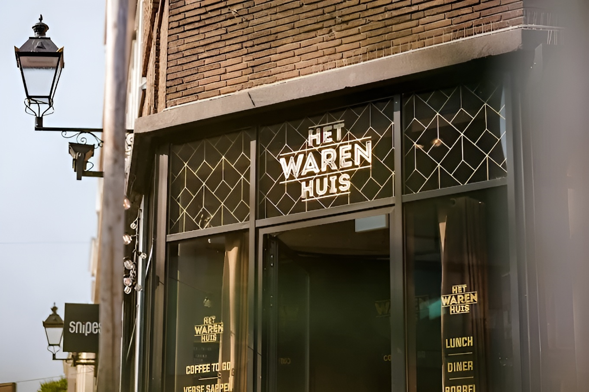

Het Warenhuis · Restaurant · Den Bosch
Van concept naar uitvoerbaar ontwerp.
Hospitality vraagt om samenhang: routing, sfeer, materiaal en operatie. We maakten het ontwerp concreet met interieurvisualisaties en een haalbaarheidscheck op indeling en flow.